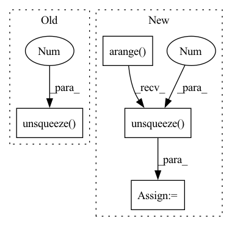

Pattern ID :32615
Before Change
self.embedding = torch.nn.Parameter(torch.randn((input_cases, hidden_features)).mul(embedding_std))
self.pos_embd_scale = torch.nn.Parameter(torch.ones((1, hidden_features, 1)).mul(embedding_std))
pos_embd = torch.range(1, input_count).unsqueeze(0 )
feature_embd = torch.range(1, hidden_features).unsqueeze(1)
additive = feature_embd % 2
feature_embd = (feature_embd - additive) / 2
additive *= math.piAfter Change
self.embedding = torch.nn.Parameter(torch.randn((input_cases, hidden_features * 2)).mul(embedding_std))
pos_embd = torch.arange(0, input_count).unsqueeze(0) + 1
feature_embd = torch.arange(0, hidden_features).unsqueeze(1 ) + 1
additive = (feature_embd % 2).to(torch.float)
feature_embd = (feature_embd - additive) / 2
additive *= math.piIn pattern: SUPERPATTERN
Frequency: 4
Non-data size: 4
Instances Fragment ID: 94943484
Project Name: homebrewnlp/homebrewnlp
Commit Name: 007c929505d510af1b041da75b1dbfbcdc2f931f
Time: 2021-08-27
Author: 39779310+ClashLuke@users.noreply.github.com
File Name: module.py
M Class Name: LinearAttention
N Class Name: LinearAttention
M Method Name: __init__(7)
N Method Name: __init__(7)
M Parent Class: torch.nn.Module
N Parent Class: torch.jit.ScriptModule
M File Name: module.py
N File Name: module.py
M Start Line: 245
M End Line: 255
N Start Line: 316
N End Line: 331
Before Change
def nucleus_sampling(self, e_outputs, e_masks):
trg_input = [self.bos_id, self.sp2_id] + [self.pad_id] * (self.args.trg_max_len-len(trg_input))
trg_input = torch.LongTensor(trg_input).unsqueeze(0 ) .to(e_outputs.device) // (1, T_L)
output_ids = []
After Change
trg_input[1] = self.args.sp2_id
trg_input = trg_input.unsqueeze(0) // (1, T_L)
trg_pos = torch.arange(self.args.trg_max_len, device=trg_input.device).unsqueeze(0 ) // (1, T_L)
output_ids = []
Fragment ID: 94943485
Project Name: devjwsong/recosa-dialogue-generation-pytorch
Commit Name: 63e2cd90ddb124ac7820f917a35ddac3b7b21156
Time: 2021-10-21
Author: devjwsong@gmail.com
File Name: src/train_module.py
M Class Name: TrainModule
N Class Name: TrainModule
M Method Name: nucleus_sampling(3)
N Method Name: nucleus_sampling(3)
M Parent Class: pl.LightningModule
N Parent Class: pl.LightningModule
M File Name: src/train_module.py
N File Name: src/train_module.py
M Start Line: 173
M End Line: 199
N Start Line: 185
N End Line: 214
Before Change
// We use the same vector as both a query and a key.
assert int(buckets.shape[1]) == self.n_hashes * seqlen
ticker = torch.arange(self.n_hashes * seqlen, device=device).unsqueeze(0 ) .expand_as(buckets)
buckets_and_t = seqlen * buckets + (ticker % seqlen)
buckets_and_t = buckets_and_t.detach()
After Change
total_hashes = self.n_hashes + self.n_local_attn_hashes
ticker = torch.arange(total_hashes * seqlen, device=device).unsqueeze(0 ) .expand_as(buckets)
buckets_and_t = seqlen * buckets + (ticker % seqlen)
buckets_and_t = buckets_and_t.detach()
Fragment ID: 94943488
Project Name: lucidrains/reformer-pytorch
Commit Name: 4017831b71f1807ce6e82b28d63eae6bce6dcf7b
Time: 2020-03-09
Author: lucidrains@gmail.com
File Name: reformer_pytorch/reformer_pytorch.py
M Class Name: LSHAttention
N Class Name: LSHAttention
M Method Name: forward(6)
N Method Name: forward(6)
M Parent Class: nn.Module
N Parent Class: nn.Module
M File Name: reformer_pytorch/reformer_pytorch.py
N File Name: reformer_pytorch/reformer_pytorch.py
M Start Line: 186
M End Line: 352
N Start Line: 189
N End Line: 361
Before Change
for _ in range(extra_steps):
tgt_idx = (tgt_idx + 1).clip(max=T)
// (B, S, 1)
src_mask = (extra_weights > 0).unsqueeze(2 )
output.scatter_add_(
1,
tgt_idx.unsqueeze(-1).expand(-1, -1, C),
src_feats * src_maskAfter Change
// The extra entry in last dim is for
output = input.new_zeros((B, T + 1, C))
delay = input.new_zeros((B, T + 1))
source_range = torch.arange(0, S).unsqueeze(0 ) .type_as(input)
zero = alpha.new_zeros((1,))
// right scatter Fragment ID: 94943489
Project Name: george0828zhang/torch_cif
Commit Name: 6f9e8375cb653efb413a42a4d597f4a89f53d7bf
Time: 2022-02-17
Author: cc.chang0828@gmail.com
File Name: cif.py
M Class Name: AnonimousClass
N Class Name: AnonimousClass
M Method Name: cif_function(7)
N Method Name: cif_function(7)
M Parent Class:
N Parent Class:
M File Name: cif.py
N File Name: cif.py
M Start Line: 69
M End Line: 134
N Start Line: 71
N End Line: 185